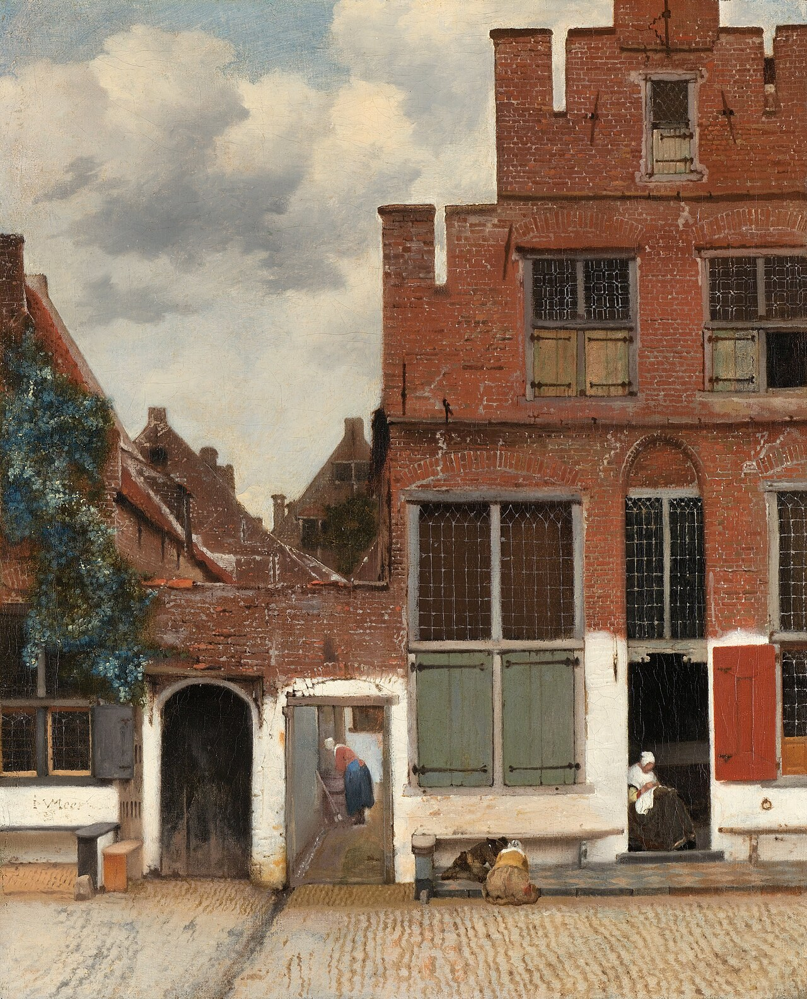

小街 The Little Street
维米尔 · 约1658年 · 阿姆斯特丹荷兰国立博物馆
Johannes Vermeer · c. 1658 · Rijksmuseum, Amsterdam
图片：Wikimedia Commons，公有领域 / Image: Wikimedia Commons, public domain

发现 · Discover
两栋普通的房子 Two ordinary houses
画里只有鹅卵石街道上的两栋16世纪房子，没有全景，也没有发生什么大事。这在当时的城市风景画里很少见。
Just two 16th-century houses on a cobbled street: no panorama, no notable events. This was unusual for cityscapes of the time.
玩耍的孩子 Children at play
维米尔自己有11个孩子，但这两个玩耍的孩子，是他所有已知作品中唯一出现的孩子。
Vermeer had 11 children of his own, yet these two are the only children in any of his known works.
门口做针线的女人 The woman sewing
门口有一个女人在做针线。如果画的真是弗拉明街，人们很想认为她就是维米尔的姑妈。
A woman sews in the doorway. If this is indeed Vlamingstraat, it is tempting to see her as Vermeer's aunt.
小巷里的女人 The woman in the alley
旁边的小巷里，还有一个女人在忙家务。
In the alley beside the house, another woman is busy with housework.
牛肚门 The Tripe Gate
维米尔的姑妈靠卖牛肚养活孩子。房子旁边的门道，直到19世纪都被叫作“牛肚门”。
Vermeer's aunt supported her children by selling tripe. The passageway beside her house was known as the Tripe Gate into the 19th century.
今天的小街 The street today
今天，画里唯一还能认出来的，是右边那道门和通道。
Today, the only part still recognisable is the gate and passageway on the right.
故事 · The story
ACT I 第一幕 · 一条普通的街 An ordinary street
维米尔没有画教堂或广场，而是画了两栋普通的房子。这可能是北欧艺术中最早的普通房屋外观“肖像”。
Vermeer painted no church or square, just two ordinary houses. It may be the earliest "portrait" of an ordinary house exterior in northern European art.
约1658年 · 阿姆斯特丹荷兰国立博物馆 / c. 1658 · Rijksmuseum, Amsterdam
ACT II 第二幕 · 一百年的谜 A century-old puzzle
近一个世纪以来，学者们一直在争论：这条街是真实存在，还是维米尔想象出来的？2015年，艺术史学家弗兰斯·格赖岑豪特查阅17世纪的码头登记册，发现全城只有一个地方有两个相邻的门道，和画中一样：弗拉明街40–42号。
For nearly a century, scholars debated whether this street was real or imagined. In 2015, art historian Frans Grijzenhout searched a 17th-century quay register and found only one place with two gateways side by side, just as in the painting: Vlamingstraat 40–42.
约1658年 · 阿姆斯特丹荷兰国立博物馆 / c. 1658 · Rijksmuseum, Amsterdam
ACT III 第三幕 · 姑妈的家 His aunt's house
右边的房子属于维米尔守寡的姑妈。维米尔的母亲和姐姐就住在运河对面，这是他一定看过很多次的景色。
The house on the right belonged to Vermeer's widowed aunt. His mother and sister lived across the canal; it was a view he must have seen many times.
约1658年 · 阿姆斯特丹荷兰国立博物馆 / c. 1658 · Rijksmuseum, Amsterdam
一条他看过无数次的街。 A street he must have seen many times.
作品档案 · Artwork record
| 画家（生卒年） · Artist (dates) | 约翰内斯·维米尔（1632–1675） / Johannes Vermeer (1632–1675) |
|---|---|
| 画名 · Title | 小街（代尔夫特房屋一景） / The Little Street (View of Houses in Delft) |
| 年份 · Date | 约1658年（也有研究认为画于1660–65年） / c. 1658 (some research suggests 1660–65) |
| 材质 · Medium | 布面油画 / Oil on canvas |
| 尺寸 · Dimensions | 54.3 × 44 cm |
| 收藏地 · Collection | 阿姆斯特丹荷兰国立博物馆（馆藏编号 SK-A-2860） / Rijksmuseum, Amsterdam (SK-A-2860) |
关于画家 · About the artist
约翰内斯·维米尔（1632–1675），荷兰画家，一生都在代尔夫特生活和创作。他留下的画作只有约35幅，以描绘室内的光线著称。
Johannes Vermeer (1632–1675) was a Dutch painter who lived and worked in Delft all his life. Only about 35 of his paintings survive, famous for their rendering of light in quiet interiors.
更多维米尔的画 · More by Johannes Vermeer